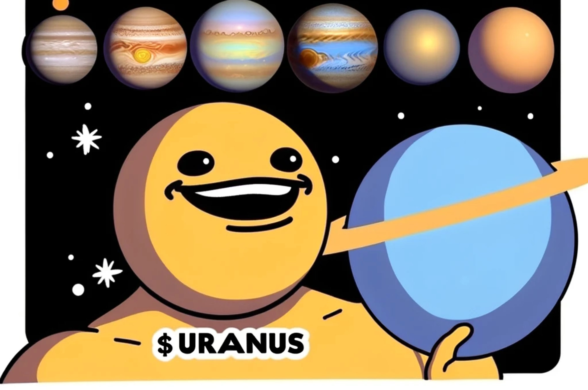

Uranus, the ruler of Aquarius, starts 2024 in retrograde, going direct on Saturday, January 27, then retrogrades again on Sunday, September 1. This suggests ongoing evolution in your home life and personal growth.
Uranus champions individuality, social justice, and authenticity. During its retrograde, focus on living by your values and perhaps engage more actively in humanitarian efforts.
In 2024, the location of the Sun on the March equinox is in the constellation of Pisces but also on the border of Aquarius. So, we are slowly moving into a new age, from Pisces to Aquarius.
Aquarius is ruled by Uranus, the planet that governs innovation, technology, and surprising events. Uranus perfectly mirrors Aquarius' distinctive attitude, complementing the nontraditional nature of these visionary air signs.
- Everyone Loves to Pump Uranus more then they like when Uranus Dumps.
- The liquidity injections just keep coming into Uranus.
- Don’t pass gas (it’s gonna be giant)
- Hold onto Uranus!
- Disclaimer: This is all in good fun – a blend of memes, astrology, and crypto. We will not go moon, we going to Uranus.
In Crypto We Trust, But In Uranus, We Believe!
Footer:
Pattern
Decentralized Intelligence Agency
World Vibe Web
Purplerock
